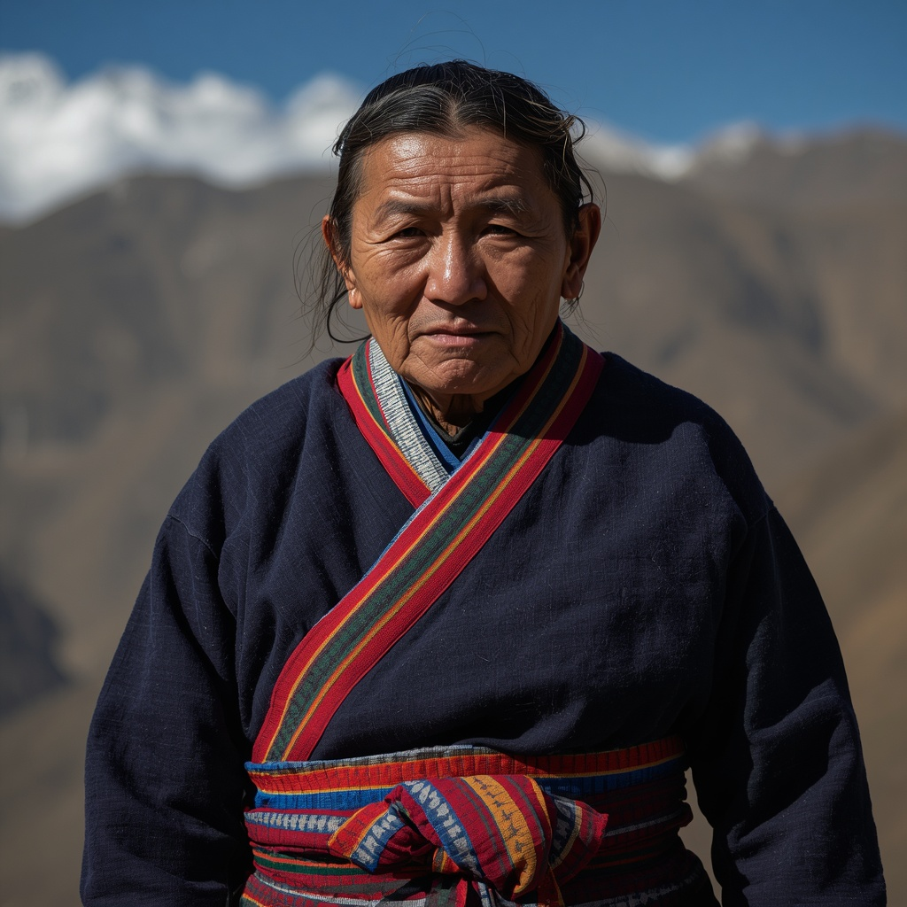

🧑🤝🧑 世界の民族・人びと
People of the World。国境を越えて暮らす人びとを、地域ごとに紹介します。伝統だけでなく、今の暮らしも一緒に。

シェルパ
🗣 使用言語
シェルパ語（チベット系言語）
👥 人口の目安
約15万〜25万人（ネパール国勢調査による、統計年により幅がある）
👘 伝統衣装
チベット系の民族衣装「チュバ」と呼ばれる長衣を着用し、女性は「パンデン」という縞模様のエプロンを腰に巻く。
🏠 住居
石造りの2階建て住居が一般的で、1階を家畜小屋や燃料の貯蔵に使い、2階を居住空間として大きな鉄製ストーブを囲んで生活する。
🍲 食文化
大麦を炒って粉にした「ツァンパ」やバター茶が伝統的な主食で、じゃがいもやそば、ネパール全土で食べられる豆カレーとご飯の定食「ダルバート」も日常食。
🎵 音楽・踊り
チベット仏教の読経や法具の音楽、祭礼における民俗舞踊が伝統的に受け継がれている。
🎉 行事・祭り
チベット暦の新年「ロサール」や、僧院で仮面舞踊が奉納される「マニ・リムドゥ祭」が代表的な年中行事。
🙏 信仰・価値観
チベット仏教ニンマ派を信仰しつつ、山や川、森などあらゆる自然物に精霊が宿るというアニミズム的な信仰も併せ持つ。エベレストは「チョモランマ（世界の母）」として神聖視されている。
📜 歴史
12〜15世紀にかけてチベット東部カム地方からネパールのソル・クンブ地方へ移住したとされ、その名は「東方の人」を意味する。長らく塩・羊毛・穀物の交易や牧畜、農業で生計を立ててきたが、1953年のエベレスト初登頂にテンジン・ノルゲイが同行したことを機に登山ガイドとしての役割が広く知られるようになった。
🏙 現代の暮らし
現在は登山ガイドやポーター、山小屋（ロッジ）経営などヒマラヤ観光業が経済の柱となっており、カトマンズなど都市部へ移住する人も増えている。
🇯🇵 日本との関係
1956年に日本山岳会隊がマナスル初登頂を果たした際にもシェルパの協力が不可欠であり、以来日本人登山家とシェルパの間には長年にわたる登山を通じた交流の歴史がある。
🌍 関連する国

出典: https://en.wikipedia.org/wiki/Sherpa_people(2026-09-01時点) / https://www.britannica.com/topic/Sherpa-people(2026-09-01時点)